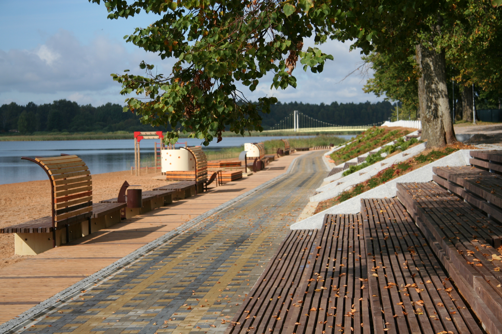
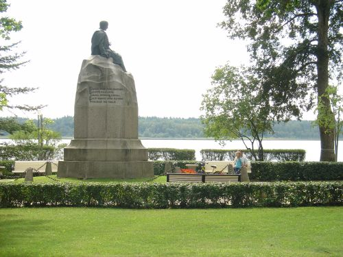

Võru
Võrumaa asustuse hälliks on Võhandu jõe kaldail olnud asulakohad - Kääpa, kus elati 5000 aastat tagasi, Villa, elati 4500 tagasi ja noorimana Tamula asulakoht, mis oli kasutusel III a.t.viimasest veerandist kuni II a.t. I veerandini e. Kr. Siin elati umbes 4250 aastat tagasi 500 aasta jooksul.
Kauni Tamula järve kaldal asuv Võru linn on asutatud 21.augustil 1784. a Vene keisrinna Katariina II soovil ja Riia kindralkuberner krahv G. Browne käsul 57 000 rbl. eest omandatud Võrumõisa asemele. Võru vanalinna omapäraks on reeglipärase planeeringuga ning korrapärane, täisnurkselt ristuv tänavavõrk.
Arheoloogilised leiud Roosisaarelt, Villakülast ja Kääpalt tõendavad, et asustuse juured lähiümbruses ulatuvad sajandite ja aastatuhandete sügavusse.
Kuulsaim võrulane läbi aegade on olnud Fr.R.Kreutzwald (1803-1882), kes elas ja töötas siin linnaarstina aastail 1833-1877. Võrus pani ta kirja ka eesti rahvuseepose "Kalevipoeg".
|  |  |
| Turistile Võrust | Avasta Võrumaad! |